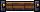
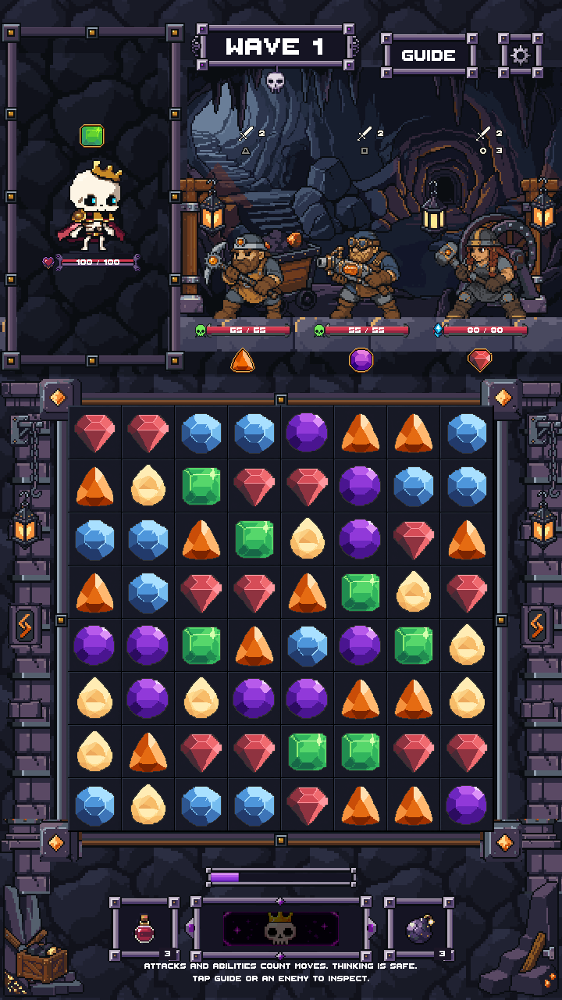
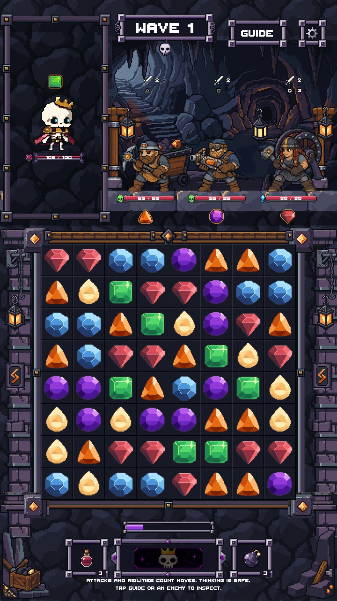
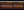
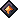
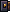
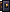
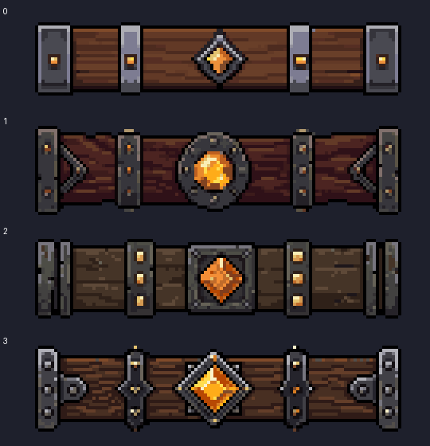
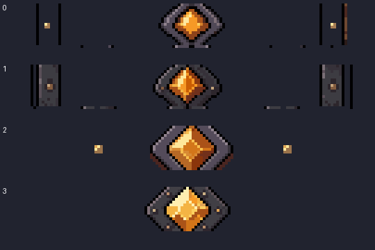

BeamCenter
40x12 / 12 colors

Actual Unity art-only captures. The upper scene, board opening/cells/gems, player frame and bottom controls are unchanged. Only the separator above the board is new. No production integration or merge.


40x12 / 12 colors

24x10 / 5 colors

18x18 / 8 colors

10x12 / 12 colors

10x12 / 12 colors

Four component families, five PNG/ASE files including separately lit left/right ends. 20 PixelLab generations across two calls / 8 candidates. Selected first-call candidate 0; short variants rejected. No image uploads.
Validation: native pixel / roundtrip checks · Unity protected-region checks · final validation
1080x1920 Unity image · 360x640 native image · Stage 01 baseline
First-call candidate 0 supplies the selected wood/iron/amber vocabulary. The over-tall source was separated and edited at native pixel resolution in LibreSprite.

Short-canvas attempt: rejected because the beam was removed with the background.

Stopped after Stage 02. Stage 03 has not started.